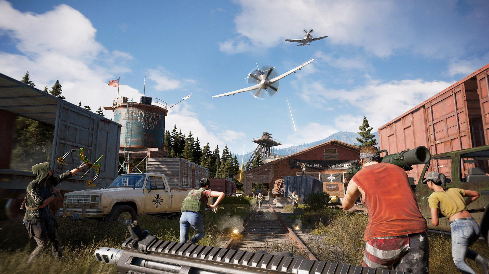

Far Cry 5
Far Cry 5 is a 2018 first-person shooter game developed by Ubisoft Montreal and Ubisoft Toronto and published by Ubisoft. It is the fifth main installment in the Far Cry series.

The game takes place in Hope County, a fictional region of Montana, United States. The main story revolves around the Project at Eden's Gate, a doomsday cult that has taken over the county at the command of its charismatic and powerful leader, Joseph Seed. Players control an unnamed junior deputy sheriff who becomes trapped in Hope County and must work alongside factions of a resistance to liberate the county from the despotic rule of the Seeds and Eden's Gate. Gameplay focuses on combat and exploration; players battle enemy soldiers and dangerous wildlife using a wide array of weapons. The game features many elements found in role-playing games, such as a branching storyline and side quests. The game also features a map editor, a co-operative multiplayer mode, and a competitive multiplayer mode. The game was released in March 2018 for Microsoft Windows, PlayStation 4 and Xbox One.
